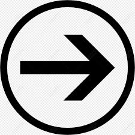

Will é capturado por alguma coisa estranha, algo do além, onde seus amigos: Mike, Dustin e
Lucas junto com Onze e o resto do povo de Hawkings vão procurá-lo pela cidade.
Se torna algo preocupante já que ao decorrer das investrigações, bastante coisa estranha
ocorre na cidade, como apagões ou luzes piscando.
Eles acabam descobrindo coisas sobranaturais como o mundo invertido, o famoso The Umpside
Down e um monstro, o Demogorgon, monstro da primeira temporada.
A história na temporada 1 se passa em 1983
O demogorgon é um monstro com uma boca em forma de flor e cheia de dentes,
ele é o responsável pela captura de Will e a preocupação pelo moradores da cidade.
pagina principal
Temporada 2
Temporada 3
Temporada 4